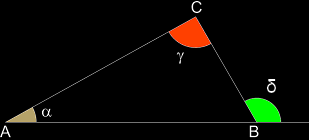
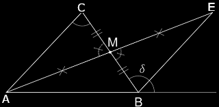

Le disuguaglianze dei triangoli
Il teorema dell'angolo esterno (maggiore)
Teorema. In un triangolo, ogni angolo esterno è maggiore di ciascuno dei due angoli interni non adiacenti a esso.
Ipotesi ABC è un triangolo.
Tesi δ > γ e δ > α.
Dim. Disegniamo il punto medio M del lato BC. Prolunghiamo il segmento AM di un segmento ME ≅ AM e congiungiuamo E con B.
I triangolo AMC e BME hanno:
MC ≅ BM per costruzione;
AM ≅ ME per costruzione;
gli angoli AM̂C e BM̂E opposti al vertice per costruzione, quindi congruenti.
Pertanto i triangoli sono congruenti per il primo criterio.
In particolare deduciamo che:
MB̂E ≅ MĈA;
per la costruzione eseguita, la semiretta BE è interna all'angolo δ; anche MB̂E è interno a δ, quindi MB̂E < δ.
Concludiamo che, nel triangolo dato, l'angolo esterno δ è maggiore dell'angolo interno MĈA ≅ BĈA.
Ripetendo la stessa costruzione a partire dal lato AB, anziché da BC, si dimostra che vale al disuguaglianza δ > NÂC ≅ BĈA. Pertanto, l'angolo esterno δ risulta maggiore sia dell'angolo interno BÂC sia dell'angolo interno BĈA. □